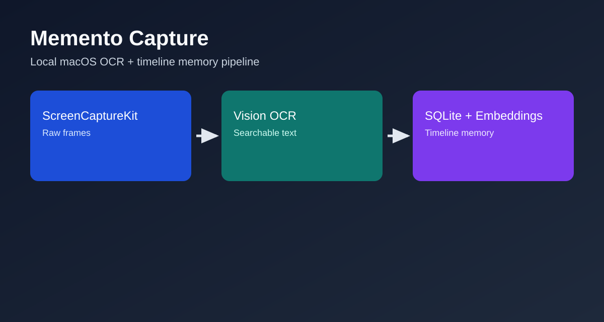

App-aware timeline
Filter visual history by the app you were using.
App chips, per-app counts, timeline markers, and previous/next marker jumps help you land on the exact moment without manually digging through screenshots.
- Browse by app, time, and nearby captures.
- Use scrubber markers to move through meaningful moments.
- Open Timeline from the menu bar inside the single app.

Timeline preview
App filters, result counts, scrubber markers, and fast marker navigation.